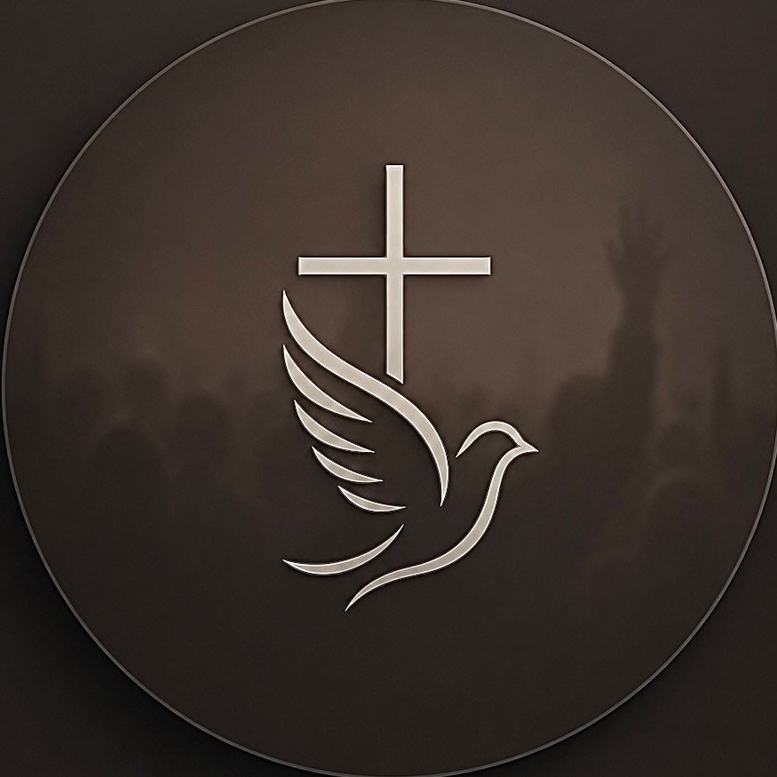

DOMINGO
Culto de Celebração
19:00
↗

RESSURREIÇÃOMINISTÉRIO RESSURREIÇÃO E VIDA
Somos uma família reunida para adorar a Deus, crescer em comunhão e levar esperança para onde estivermos.
Aqui, cada pessoa tem espaço para chegar, pertencer e crescer.
O Ministério Ressurreição e Vida é uma comunidade de fé que busca viver o evangelho com simplicidade, amor e verdade. Esta primeira versão do site foi pensada para refletir a identidade visual do ministério: escura, humana, jovem e centrada em pessoas.
Conheça nossos ministérios →VENHA CELEBRAR CONOSCO
Reserve um momento da sua semana para estar com a gente.
* Horários ilustrativos — substitua pelos horários oficiais da igreja.
Uma igreja é feita de pessoas. Descubra onde você pode servir, aprender e construir relacionamentos.
Fé, amizade e propósito para uma nova geração.
Adoração que nasce de uma vida entregue a Deus.
Comunhão, cuidado e crescimento espiritual.
Plantando a Palavra no coração dos pequenos.
VOCÊ É BEM-VINDO